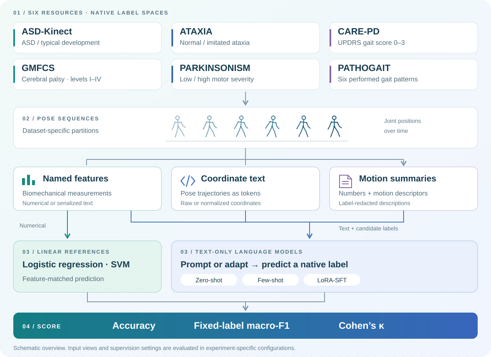

WACV 2027 · Evaluations & Datasets
Do language models
use gait evidence?
GaitEval studies how language models classify pose-derived gait evidence across six datasets, their native tasks, and different levels of supervision.
Kaiyuan Yang · Xupeng Chen · Fan Huang · Jiangpeng He
Indiana University, USA · New York University, USA
The benchmark at a glance
From motion to predictions.
Six native tasks. Multiple views of the same motion. A shared framework for testing what models learn from gait evidence.
Swipe across the diagram to explore →

One benchmark. Six native tasks.
Motion summaries, coordinates and named measurements provide different views of walking motion. Feature-matched linear references, evidence controls and task-specific adaptation help explain the resulting predictions.
01 / REPRESENTPose-derived inputs
Textual coordinates, motion summaries, or biomechanical measurements.
02 / EVALUATEEvidence and supervision
Zero-shot prompting, available few-shot settings and dataset-specific LoRA adaptation.
03 / INTERPRETNative labels and errors
Accuracy, fixed-label macro-F1 and agreement, with participant and class-level interpretation.
Task-specific adaptation
Summary-SFT results for Qwen2.5-7B, corresponding to the six dataset rows in Table 5.
These are dataset-specific tasks, not a common clinical diagnostic scale. ATAXIA and PATHOGAIT use performed gait; their main tests contain three and two participants. Similar aggregate scores do not establish population-level superiority.
What we find
Zero-shot agreement is limited on most tested motion-summary tasks. Adaptation learns useful in-distribution mappings on selected datasets, while gains depend on the task and representation. Reliable transfer is not observed on the tested ATAXIA–PATHOGAIT binary pair.
Reproduce the scores
The compact Python release recomputes all six summary-SFT scores from included held-out predictions using one scoring protocol. It requires no GPU or model download.
GaitEval on GitHub ↗The release covers prediction-level metric reproduction. Source inputs and checkpoints are required for inference and retraining.